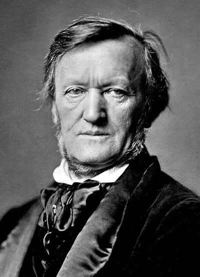

Servidor WEB-WAGNER (192.168.100.12)

Richard Wagner (Leipzig, 1813 - Venecia, 1883) fue un compositor alemán, famoso sobre todo por sus óperas, como El holandés errante, Tristán e Isolda o la tetralogía El anillo del nibelungo. También mandó construir el teatro de Bayreuth, donde todavía se celebra cada verano un festival con sus obras.
Foto: Franz Hanfstaengl (1871), Wikimedia Commons, dominio público.
Página de prueba para la práctica de redes de Sistemas Informáticos (1º DAM).